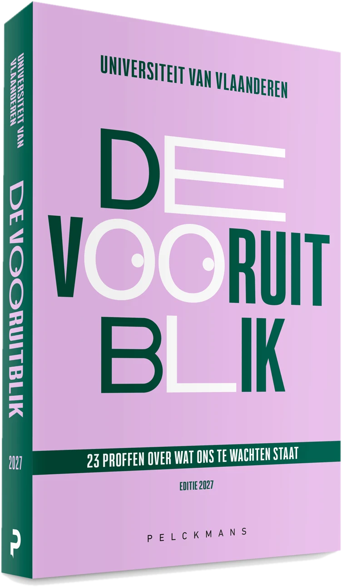

47 wetenschappers
Ontdek de auteurs en podcastsprekers achter de 23 hoofdstukken. Filter op hun universiteit of zoek op naam of onderwerp.

47 wetenschappers

Bert Op 't Eijnde
Langer en gezonder leven in Limburg?

Tim De Meyer
Langer en gezonder leven in Limburg?

Jan Danckaert
Waarom komen Nobelprijswinnaars in oktober graag naar Brussel?

Vincent Ginis
Waarom komen Nobelprijswinnaars in oktober graag naar Brussel?

Evelien Polders
Eindelijk verkeersregels voor e-steps, maar toch niet veiliger?

Renaat Coopman
Eindelijk verkeersregels voor e-steps, maar toch niet veiliger?

Luc Duerloo
Hoe gewoon mag onze toekomstige koningin Elisabeth zijn?

Jan Theunis
Hoe gewoon mag onze toekomstige koningin Elisabeth zijn?

Ann van Griensven
Komt er in 2027 nog drinkbaar water uit de kraan?

Tim Soens
Komt er in 2027 nog drinkbaar water uit de kraan?

Giselinde Kuipers
Wordt een botox-afspraak dit jaar even normaal als een tandartscontrole?

Philip Blondeel
Wordt een botox-afspraak dit jaar even normaal als een tandartscontrole?

Stijn Joye
Hoe heeft Star Wars de hele filmindustrie veranderd?

Stef Aupers
Hoe heeft Star Wars de hele filmindustrie veranderd?

Chantal Mathieu
Geen spuitjes meer voor mensen met diabetes?

Luk Buyse
Geen spuitjes meer voor mensen met diabetes?

Ruben Verborgh
Nog meer internet-brol door (stiekeme) advertenties op ChatGPT?

Ike Picone
Nog meer internet-brol door (stiekeme) advertenties op ChatGPT?

Brahim Zarouali
Nog maar één app op je smartphone?

Roel Gevaers
Nog maar één app op je smartphone?

Annemie Bogaerts
Een stap vooruit: Birkenstocks gemaakt met elektriciteit, niet meer met gas?

Bart Vermang
Een stap vooruit: Birkenstocks gemaakt met elektriciteit, niet meer met gas?

Piet Hoebeke
Homoseksualiteit wegknippen uit je DNA?

Wim Pinxten
Homoseksualiteit wegknippen uit je DNA?

Annelien Smets
Verleren we in 2027 om toevalligheden op te merken?

Len Feremans
Verleren we in 2027 om toevalligheden op te merken?

Hannah Keppler
Zullen mensen hun hoorapparaat in 2027 écht graag dragen?

Laure Jacquemin
Zullen mensen hun hoorapparaat in 2027 écht graag dragen?

Chiara Candaele
In 2027 geen adoptiekinderen meer uit het buitenland?

Heidi Mertes
In 2027 geen adoptiekinderen meer uit het buitenland?

Alexander Mattelaer
Kan de NAVO Rusland aan?

Marijn Hoijtink
Kan de NAVO Rusland aan?

Werend Boesmans
Vanaf nu ziektes opsporen met stoelgangtesten in plaats van bloedtesten?

Lukas Van Oudenhove
Vanaf nu ziektes opsporen met stoelgangtesten in plaats van bloedtesten?

Jeroen Scheerder
Dit jaar een triatlon lopen om erbij te horen?

Ignace Glorieux
Dit jaar een triatlon lopen om erbij te horen?

Raoul Van Damme
Passeert er binnenkort een wolf in jouw stadstuin?

Hendrik Schoukens
Passeert er binnenkort een wolf in jouw stadstuin?

Jaroslav Hruby
Wat neemt Rafaël Liégeois mee naar het ISS?

Jan Wouters
Wat neemt Rafaël Liégeois mee naar het ISS?
Nathalie Pattyn
Kan een mens een non-stop vlucht van 22 uur aan?

Jelle Habay
Kan een mens een non-stop vlucht van 22 uur aan?

Britt Weyts
Kan een mens een non-stop vlucht van 22 uur aan?

Peter Van Aelst
Wie wordt de opvolger van Trump?

Bart Kerremans
Wie wordt de opvolger van Trump?

Laura Sels
Geraak je alleen nog via Tinder aan een lief?

Laura Vandenbosch
Geraak je alleen nog via Tinder aan een lief?